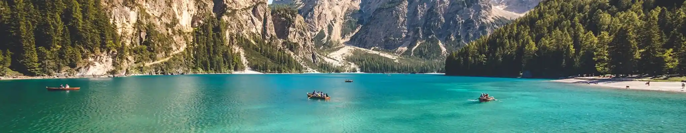

About Us
Our History
Our journey began with a passion for showcasing Ghana's vibrant culture. We established the company to bridge the gap between global travelers and authentic Ghanaian experiences. Initially, we operated as a small boutique agency focusing on local Accra day trips. As our service grew, we expanded to the Central Region's historic castles and beaches. We survived the pandemic by pivoting to domestic tourism and local partnerships. We've hosted thousands of guests from every continent, creating lifelong memories. Our growth is fueled by sustainable travel and local community empowerment. We've invested in professional guides who are history experts and storytelling masters.
Our Vision
Our vision is to be West Africa's premier gateway for immersive and ethical travel. We strive to be Ghana's most trusted tourism name, known for integrity and cultural respect. We want visitors to leave with a transformed perspective on African heritage. Our goal is to lead in sustainable practices preserving natural wonders like Mole National Park. We aim to create world-class travel infrastructure making Ghana accessible and enjoyable. We believe tourism should benefit local artisans and farmers directly. Our vision includes multi-country West African expeditions highlighting regional connectivity. We aspire to win international acclaim for our "Beyond the Return" initiatives.
Our Mission
Our mission is to provide authentic, safe, and enriching Ghanaian experiences. We deliver personalized service exceeding global clientele expectations. We work with local communities for sustainable development and cultural preservation. We protect Ghana's heritage sites like Cape Coast Castle and ancient mosques. We prioritize safety and comfort, making guests feel at home in Accra. Our team improves through regular training and best industry practices. We offer varied packages, from luxury coastal retreats to eco-adventures in the Volta Region. We advocate for Ghana's unique flora and fauna protection in every tour.
Why Choose Us
Local Expertise
Our guides aren't just experts; they are locals who grew up in the communities you visit, offering stories and shortcuts you won't find in any guidebook.
Tailor-Made Itineraries
From solo heritage quests to large family safaris, we customize every detail to match your pace, interests, and budget perfectly.
Safety & Comfort
We prioritize your peace of mind with vetted 4x4 transport, premium accommodation partners, and 24/7 on-ground support throughout Ghana.
All-Inclusive Pricing
No hidden fees or unexpected costs. Our packages transparently cover permits, entry fees, and transport so you can focus on the journey.
Environmental Stewardship
We are committed to sustainable tourism practices that protect Ghana's natural beauty and wildlife for future generations.
Responsible Tourism
We are committed to responsible tourism practices that support local economies and promote cultural preservation.